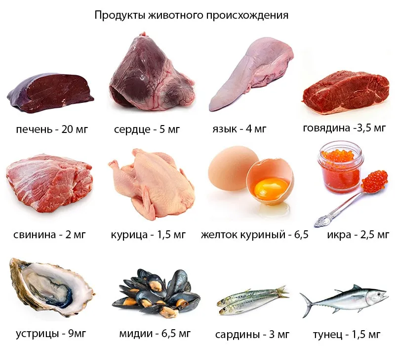

Что такое гемоглобин и какова его роль в организме
Гемоглобин – железосодержащий белок в организме человека, состоящий из двух элементов – глобина (обычный белок) и гемы (железосодержащий компонент). Гемоглобин входит в состав эритроцитов и основная его функция – перенос кислорода. Именно благодаря гемоглобину в кровь попадает оксиген, который затем транспортируется по всем клеткам нашего организма.«Работает» это следующим образом: кровь доходит до легких, там она насыщается кислородом (происходит это благодаря тому, что гемоглобин соединяется с кислородом). В итоге в крови появляется новый элемент – оксигемоглобин, который переносит кислород ко всем клеткам и органам. Вследствие окислительных процессов кислород освобождается, ткани насыщаются кислородом, а образовавшийся углекислый газ поступает в легкие, где он потом выдыхается. Процесс круговорота крови продолжается бесконечно. Итак, главные функции гемоглобина: - перенос кислорода к клеткам тела;
- перенос углекислого газа к легким.
Норма гемоглобина в организме человека
Уровень гемоглобина в крови зависит от нескольких факторов: количества крови, пола, возраста и здоровья человека, правильного питания. Первый и последний фактор в большей степени влияют на уровень гемоглобина. При кровопотерях (ранениях, операциях, а также месячных у женщин) его уровень понижается. Один из естественных способов восстановить уровень гемоглобина – употреблять железосодержащие продукты.В среднем, объем крови, циркулирующей в организме, составляет 5-6 литров у мужчин и 4-4,5 литра у женщин. Соответственно, и норма гемоглобина у мужчин выше – 130-170 г/л, у женщин – 120-140 г/л.
Таблица продуктов, повышающих гемоглобин
Количество гемоглобина в здоровом организме подчинено тому, что мы едим. Как уже рассказывалось выше, составная часть гемоглобина – железосодержащий элемент. Поэтому продукты, содержащие железо, естественным образом повышают уровень гемоглобина. Что влияет на количество гемоглобина в крови
Организм человека очень чувствителен к внешним факторам. И если мы не всегда можем повлиять на экологию, то в нашей власти контролировать свое питание. К сожалению, некоторые продукты питания способны снизить показатель гемоглобина в крови. И это не всегда вредные продукты. Секрет снова кроется в биологии тела и происходящих внутри нас химических процессах.Кальций является тем веществом, которое ухудшает усвоение железа.То же самое относится к кока-коле, крепкому чаю и кофе. Эти напитки содержат танин и полифенолы, которые мешают усвоению железа. В то время как витамин С повышает усвоение железа.
Поэтому молочные, кисломолочные продукты, чай и кофе могут естественным образом повлиять на уровень гемоглобина. Естественно, полностью исключать эти продукты нельзя, но если уровень гемоглобина пониженный, нужно употреблять их меньше и отдельно от железосодержащих продуктов.
Итак, гемоглобин – это важный компонент нашей крови. Для правильного функционирования организма и насыщения тканей кислородом, его уровень должен быть в норме. Не смотря на то, что существует множество медикаментозных препаратов и пищевых добавок, повышающих гемоглобин, лучшим решением будет правильное питание.